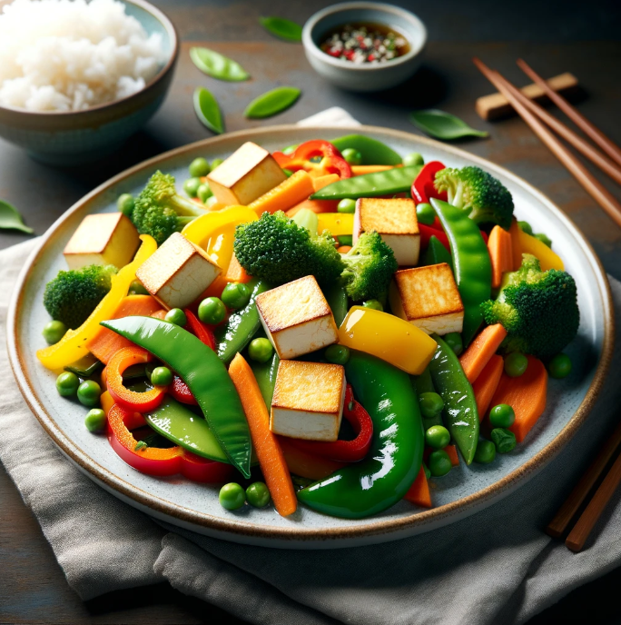

Vegetable Stir-Fry with Tofu and a Small Serving of Steamed Rice
Ingredients
- 1 block firm tofu, drained and cubed
- 2 cups mixed vegetables (bell peppers, broccoli, carrots, snap peas)
- 2 tablespoons soy sauce (low-sodium if preferred)
- 1 tablespoon hoisin sauce
- 1 tablespoon rice vinegar
- 1 tablespoon sesame oil
- 2 cloves garlic, minced
- 1 teaspoon ginger, minced
- 2 green onions, sliced
- 1 tablespoon cooking oil (vegetable or sesame oil)
- Cooked steamed rice, for serving
| Nutrition Facts |
| Calories |
69 kcal |
| Protein |
2.03g |
Meal Procedure
- Prepare the Tofu: Drain the tofu and pat it dry with paper towels.
- Cut the tofu into bite-sized cubes.
- Marinate the Tofu: In a bowl, combine the soy sauce, hoisin sauce, rice vinegar, minced garlic, and minced ginger.
- Add the tofu cubes to the marinade and toss gently to coat.
- Let the tofu marinate for at least 15-20 minutes to absorb the flavors.
- Prepare the Vegetables: Wash and chop the mixed vegetables into bite-sized pieces.
- Stir-Fry the Tofu: Heat a large skillet or wok over medium-high heat.
- Add the cooking oil to the skillet.
- Once hot, add the marinated tofu cubes to the skillet in a single layer.
- Cook the tofu for about 3-4 minutes on each side or until golden brown and crispy.
- Remove the tofu from the skillet and set aside.
- Stir-Fry the Vegetables: In the same skillet, add a little more oil if needed.
- Add the chopped vegetables to the skillet and stir-fry for about 4-5 minutes, or until they are crisp-tender.
- Combine Tofu and Vegetables: Return the cooked tofu to the skillet with the stir-fried vegetables.
- Add the sliced green onions to the skillet.
- Drizzle with sesame oil and toss everything together to combine.
- Serve: Serve the vegetable stir-fry with tofu hot, alongside a small serving of steamed rice.
Tips:
- Feel free to customize the vegetables based on your preferences or what you have available.
- Adjust the seasonings and sauces according to your taste preferences.
- For added flavor, you can sprinkle toasted sesame seeds or chopped peanuts over the stir-fry before serving.
- Use a non-stick skillet or wok for easier cooking and cleanup.